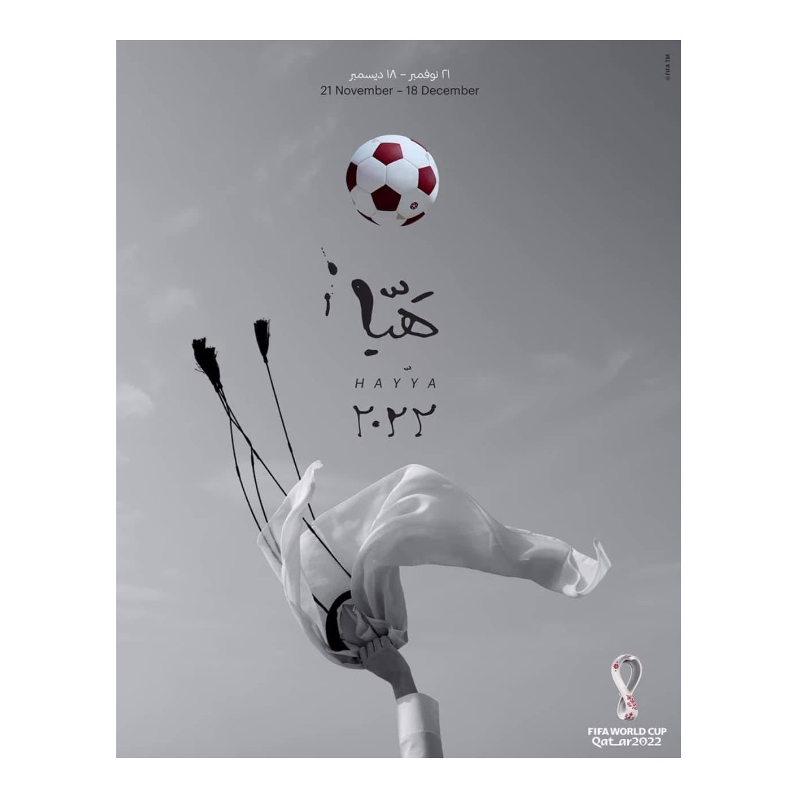

Official Poster
The official poster for the 2022 FIFA World Cup in Qatar was designed by Bouthayna Al Muftah, a prominent Qatari artist. For the first time in tournament history, a series of eight posters was created rather than just one, all featuring Al Muftah’s signature monochromatic aesthetic.
The central piece depicts the "gutra" and "egal" (traditional Qatari headwear) being thrown into the air. This action is a local gesture of celebration and joy, commonly performed by fans when a goal is scored.
Al Muftah’s inspiration for the series was "collective memory," aiming to archive past traditions in a contemporary manner and tell the story of Qatar’s football culture.
The seven additional posters showcase the Arab world's broader passion for football, featuring themes like family unity, movement, and the energy of the crowd. One specific design shows two sisters cheering on their brother as he kicks a ball.
The posters incorporate the word "Hayya" (meaning "let's go"), which served as the official fan chant and application name for the tournament.

Bouthayna Al Muftah
Bouthayna Al-Muftah (born 1987) is a Qatari artist, best known for her work in printmaking and drawing. Her works are characterized by the frequent use of black ink, which she integrates into nearly all of her creations.
Al-Muftah was born in Qatar in 1987. She holds a Bachelor of Arts from Virginia Commonwealth University School of the Arts in Qatar (2010).
Bouthayna is the official poster artist for the 2022 FIFA World Cup. In June 2022, she unveiled her poster at Hamad International Airport in Doha. A total of eight posters are produced to represent Qatar's passion for soccer. The main poster shows a traditional Qatari headdress ghutra being thrown in the air, as a symbol of the celebrations and soccer enthusiasm in the Arab world.
In July 2022, she unveiled her poster at the Design Museum in London as part of the exhibition "Football: Designing the Beautiful Game". Also present at the unveiling was the official ambassador of the 2022 FIFA World Cup Qatar, David Beckham.
On 18 July 2022, Fashion Trust Arabia announced that, among other artists, Al Muftah would collaborate with designer Yasmin Mansour to create and promote sustainable fashion.